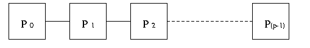

hyPACK-2013 Mode 1 : Parallel Programming Using MPI C++ Library Calls
Example programs using MPI-1X & C++ language include numerical integration, global summation algorithms
on various topologies, and matrix vector
multiplication using different decomposition techniques.
|
|
|
Example 1.1
|
Write MPI C++ Program (SPMD) to get started
|
Example 1.2
|
Write MPI C++ program (MPMD) to get started.
|
Example 1.3
|
Write MPI C++ program to find sum of n integers on Parallel Processing Platform.
You have to use MPI point-to-point blocking communication library calls
|
Example 1.4
|
Write MPI C++ program to find sum of n integers on a Parallel Computing System
in which procesors are connected with linear array topology and use MPI point-to-point
blocking communication library calls (Assignment Question)
|
Example 1.5
|
Write MPI C++ program to find sum of n integers on a Parallel Computing System in which
procesors are connected with ring topology and use MPI point-to-point blocking communication
library calls
|
Example 1.6
|
Write MPI C++ program to find sum of n integers on a Parallel Computing System in which procesors are
connected with tree topology (Associative-fan-in rule for tree can be assumed) and use MPI point-to-point
blocking communication library callson library calls.
|
Example 1.7
|
Write MPI C++ program to compute the value of PI by numerical integration using MPI
point-to-point blocking communication library calls.
|
Example 1.8
|
Write MPI C++ program for prefix sum (scan operation) calculation using MPI point-to-point blocking communication library calls. ( Assignment Question )
|
Example 1.9
|
Write MPI C++ program to find sum of n numbers on p processor HyperCube Parallel computing system with Hypercube as interconnection
network topology using MPI point-to-point blocking communciation library calls. (Assignment Question)
|
Example 1.10
|
Write MPI C++ program to find sum of n integers on a Parallel Computing System
in which procesors are connected
with tree topology (Associative-fan-in rule for tree can be assumed) and use MPI point-to-point
non-blocking communication library calls. (Assignment Question)
|
|
Description of Programs - MPI Point-to-Point Communication Library Calls
|
Example 1.1:
|
Write MPI C++ program to get started (SPMD) - Hello World to all process
(Download source code :
mpicpp-hello-world.C
|
- Objective
Write a MPI C++ program to print "Hello World"
- Description
Process with rank k ( k = 1, 2, ....., p-1) will send"Hello World" message to
process with rank0. Process with rank0receives the
message and prints it. You have to use MPI point-to-point blocking communication library calls (MPI::COMM_WORLD.Send and MPI::COMM_WORLD.Recv)
to write this program.
-
Input
None
-
Output
Process with rank 0 prints the following message with each of the other process's
Rank Numbers (i.e. rank = 1,2, ..., p-1). Hello World from Process's rank
where rank = 1,2, ..., p-1
|
- Objective
Write a MPI C++ program to print "Hello World"
- Description
Process with rank k ( k = 1, 2, ....., p-1) will send "
Hello World" message to process with rank 0.Process with rank 0
receives the message and prints it. MPI point-to-point communication
library calls (MPI::COMM_WORLD.Send and MPI::COMM_WORLD.Recv) have been used in this program. The master process is responsible for receiving the "hello message" from all participating processes (i.e slaves). On the other hand, the slave program is responsible for sending "Hello Message" to the master process. All slaves perform identical tasks. In ohterwords, the slave program send the result back to the master process.
-
Input
None
-
Output
Process with rank 0 prints the following message with each of the other process's
Rank Numbers (i.e. rank = 1,2, ..., p-1). Hello World From process
rank where rank = 1,2, .....p-1
|
Example 1.3:
|
Description for implementation of MPI C++ program to find sum of n
integers using MPI point-to-point blocking communication library calls
(Download source code :
mpicpp-sum-pt-to-pt.C )
|
- Objective
Write a MPI program to find sum of n integers on p processors of
Message Passing cluster
- Description
Each process with rank greater than 0 sends the value of its rank to the
process with rank 0. Process with rank 0 receives the values from
each process and calculate the sum. Finally, process with rank 0 prints
the sum.
- Input
For input data, let each process uses its identifying number, i.e. the value of
its rank. For example, process with rank 0 uses the number 0, process
with rank 1 uses the number 1, etc.
- Output
Process with rank 0 prints the final sum.
|
Example 1.4:
|
Write MPI C++ program to find sum of n integers on a Parallel Processing platform in which processors
are connected by linear array topology. You have to use MPI point-to-point blocking communication library calls.
|
- Objective
MPI program to find sum of n integers on a Parallel Processing platform in which processors
are connected by linear array topology.
- Description
In linear array interconnection network, each processor ( except the
processor at the end ) has a direct communication link to the immediate next
processor. A simple way of communicating a message between processors is, by
repeatedly passing message to the processor immediately to either right or left
, until it reaches its destination, i.e. last processor in the linear array.
A simple way to connect processors is illustrated in Figure 1.

Figure 1 Parallel Computing system - Processors are connected by Linear Array topology
All the processes are involved in communication. The processes with rank k
(k is greater than 0) receives the accumulated or partial sum
from the previous process with rank k-1. Finally, process with rank p-1
prints the final sum.
-
Input
For input data,let each process use its identifying number, i.e. the value of
its rank. For example, process with rank 0 uses the number 0, process
with rank 1 uses the number 1, etc.
-
Output
Process with rank p-1 prints the final sum.
|
Example 1.5:
|
Description for implementation of MPI C++ program to find sum of n integers on
parallel computer in which processors are arranged in ring topology using
point-to-point blocking communication library calls
(Download source code :
mpicpp-sum-ring-topology.C )
|
- Objective
Write a MPI program to find sum of n values using p processors of
cluster. Assume that p processors are arranged in ring topology.
- Description
In linear array interconnection network ( Refer
Example
1.4 for more details on linear array topology ) with a wraparound connection is called
as a ring. A wraparound connection is often provided between the processors at the
end.A simple way of communicating a message between processors is, by repeatedly passing message
to the processor immediately to either right or left; depending on which direction yield a shorter
path, until it reaches its destination, i.e., first processor in the ring.
All the processes are involved in communication. The process with rank k
(k is greater than 0) receives the accumulated or partial sum
from the previous process with rank k-1. Process with rank p-1
sends the final sum to process with rank 0. Finally, process with rank 0
prints the final sum.
-
Input
For input data, let each process use its identifying number, i.e. the value of
its rank. For example, process with rank 0 uses the number 0, process
with rank 1 uses the number 1, etc.
-
Output
Process with rank 0 prints the final sum.
|
Example 1.6:
|
Description for implementation of MPI C++ program to find sum of n integers on
parallel computer in which processors are arranged in binary tree topology (associative fan-in rule)
using MPI point-to-point blocking communication library calls
(Download source code :
mpicpp-sum-associative-fanin-blocking-tree.C )
|
- Objective
Write a MPI program to find sum of n ( n = 2 i ; i
= 3) integers on p (p=n) processors of cluster using associative
fan-in rule.
- Description
The first step is to group the total number of processors in ordered
pairs such as (P0, P1), (P2,
p3), (P4, P5), (P6,
p7), .................., (Pp-2, Pp-1).
Then compute the partial sums in all pairs of processors using MPI point-to-point
blocking communication and accumulate the partial sum on the processors
P0, P2, ....,Pp-2. For example, the
processor Pi (i is even) computes the partial sum for the pair
(Pi, Pi+1) by performing MPI point-to-point blocking
communication library calls.
 Figure 2. Tree Structure for sum of n integers by Associativ fan-in rule
Figure 2. Tree Structure for sum of n integers by Associativ fan-in rule
In the second step, consider the pair of processors (P0,
P2), (P4, P6), .................,
(Pp-4, Pp-2) obtain the new
partial sum by considering the existing accumulated partial sums on the processors
P0, P2, P4, ..., P8as explained in the previous
step. This procedure is repeated till two processors are left out and finally accumulate the
global sum on the processor P0.In this example, MPI point-to-point blocking
communication library calls such as,MPI::COMM_WORLD.Send and MPI::COMM_WORLD.Recv, are used. An example of
associative fan-in rule is described as a tree structure in the
Figure 2 for n= 16
- Input
For input data, let each process use its identifying number, i.e. the value of its rank. For
example, process with rank 0 uses the number 0, process with rank 1
uses the number 1, etc.
-
Input
For input data, let each process use its identifying
number, i.e. the value of its rank. For
example, process with rank 0 uses the number 0, process
with rank 1 uses the number 1, etc.
-
Output
process with rank 0 prints the final sum.
|
Example 1.7:
|
Description for implementation of MPI C++ program to compute the value of pie by Numerical
Integration using MPI point-to-point communication library calls
(Download source code :
mpicpp-pie-pt-to-pt.C )
|
- Objective
Write a MPI program to compute the value of pie function by numerical integration of a function
f(x) = 4/(1+x 2 ) between the limits 0 and 1.
- Description
There are several approaches to parallelizing a serial program. One approach is
to partition the data among the processes. That is we partition the interval of
integration [0,1] among the processes, and each process estimates local integral over
its own subinterval. The local calculations produced by the individual
processes are combined to produce the final result. Each process sends its integral to process 0,
which adds them and prints the result.
To perform this integration numerically, divide the interval from 0 to 1 into n
subintervals and add up the areas of the rectangles as shown in the Figure 3 (n
= 5). Large values of n give more accurate approximations of pi
. Use MPI point-to-point communication library calls.

Figure 3 Numerical integration of pie function
We assume that n is total number of subintervals, p is the number
of processes and p < n. One simple way to distribute the total
number of subintervals to each process is to dividen by p. There
are two kinds of mappings that balance the load. One is a block mapping,
partitions the array elements into blocks of consecutive entries and assigns
the block to the processes. The other mapping is a cyclic mapping. It
assigns the first element to the first process, the second element to the
second, and so on. If n > p, we get back to the first process,
and repeat the assignment process for remaining elements. This process is
repeated until all the elements are assigned. We have used a cyclic mapping
for partition of interval [0,1] ontop processes.
- Input
For input data, let each process use its identifying number, i.e. the value of its rank. For
example, process with rank 0 uses the number 0, process with rank 1 uses the
number 1, etc.
-
Input
Process with rank0 reads the input parameter n, the number of intervals on
command line.
-
Output
Process with rank 0 prints the computed value of pi function.

|
Example 1.8:
|
Example 1.8:
Write a MPI C++ program to find sum of n ( n = 2 i ; i
= 3) integers on p (p=n) processors of cluster using associative
fan-in rule. You have to use MPI Non-blocking communication library calls
|
- Objective
Write a MPI program to find sum of n ( n = 2 i ; i
= 3) integers on p (p=n) processors of cluster using associative
fan-in rule.
- Description
The first step is to group the total number of processors in ordered
pairs such as (P0, P1), (P2,
p3), (P4, P5), (P6,
p7), .................., (Pp-2, Pp-1).
Then compute the partial sums in all pairs of processors using MPI point-to-point
blocking communication and accumulate the partial sum on the processors
P0, P2, ....,Pp-2. For example, the
processor Pi (i is even) computes the partial sum for the pair
(Pi, Pi+1) by performing MPI point-to-point blocking
communication library calls.
Figure 2. Tree Structure for sum of n integers by Associativ fan-in rule
In the second step, consider the pair of processors (P0,
P2), (P4, P6), .................,
(Pp-4, Pp-2) obtain the new
partial sum by considering the existing accumulated partial sums on the processors
P0, P2, P4, ..., P8as explained in the previous
step. This procedure is repeated till two processors are left out and finally accumulate the
global sum on the processor P0.In this example, MPI point-to-point non-blocking
communication library calls such as,MPI::COMM_WORLD.ISend and MPI::COMM_WORLD.IRecv, can be used. An example of
associative fan-in rule is described as a tree structure in the Figure 2 for n= 16
- Input
For input data, let each process use its identifying number, i.e. the value of its rank. For
example, process with rank 0 uses the number 0, process with rank 1 uses the number 1, etc.
Process with rank0 reads the input parameter n, the number of intervals on
command line.
-
Output
process with rank 0 prints the final sum.
|
| |
|